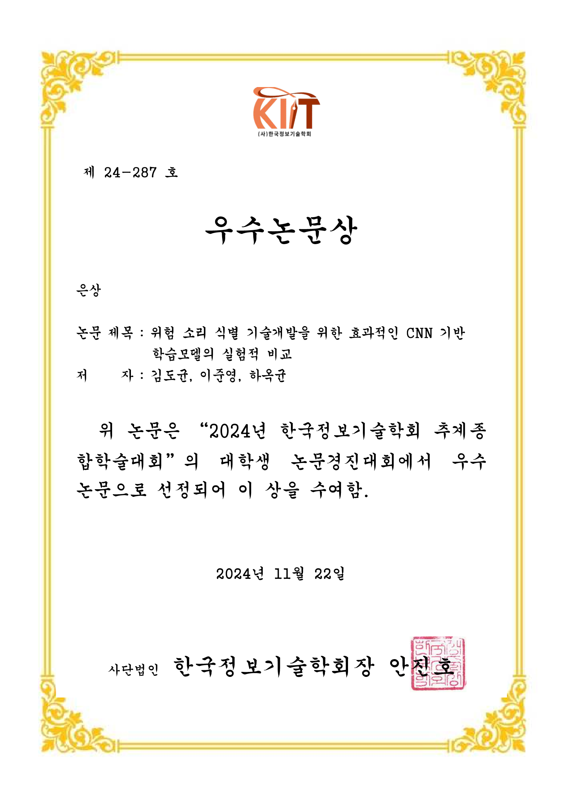

한국정보기술학회 우수논문상 은상
대학생 논문경진대회 은상 (제 24-287호)
한국정보기술학회 (KIIT)
2024년 한국정보기술학회 추계종합학술대회의 대학생 논문경진대회에서 '위험 소리 식별 기술개발을 위한 효과적인 CNN 기반 학습모델의 실험적 비교' 논문으로 우수 논문(은상)으로 선정되어 수상. (공동저자: 김도균, 이준영, 하옥균)

2024년 한국정보기술학회 추계종합학술대회의 대학생 논문경진대회에서 '위험 소리 식별 기술개발을 위한 효과적인 CNN 기반 학습모델의 실험적 비교' 논문으로 우수 논문(은상)으로 선정되어 수상. (공동저자: 김도균, 이준영, 하옥균)
